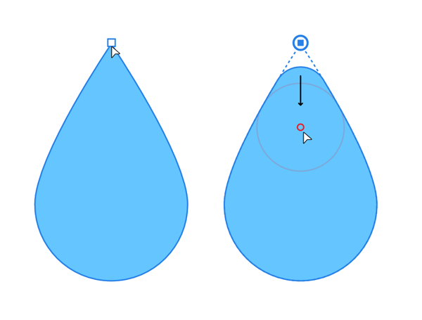

Cornering lets you selectively round sharp corners on closed shapes.

Ideal for rounding corners on geometric shapes or on closed shapes drawn with the Pen tool, the tool let you selectively apply cornering as and when you need it. A pre-requisite is that the corner must be a sharp corner, so geometric shapes such as polygons, stars, and triangles are great candidates for corner rounding.
Using an on-screen red "shaping" ring you can control the size of the corner by dragging; the corner will shape itself around the ring's circumference for precise and perfect results. You'll see the ring only as you drag from a sharp corner node.